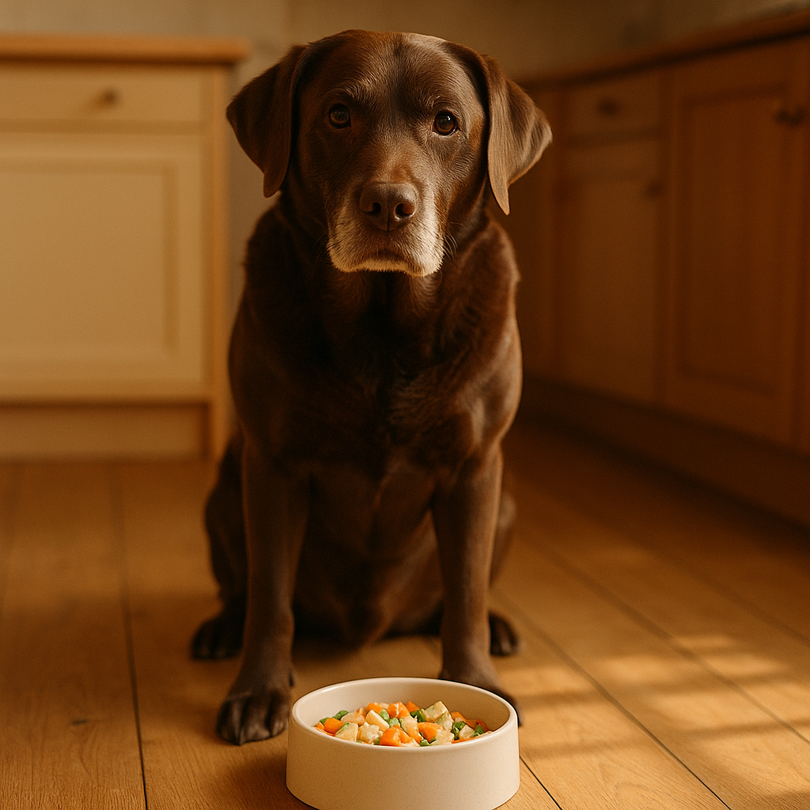
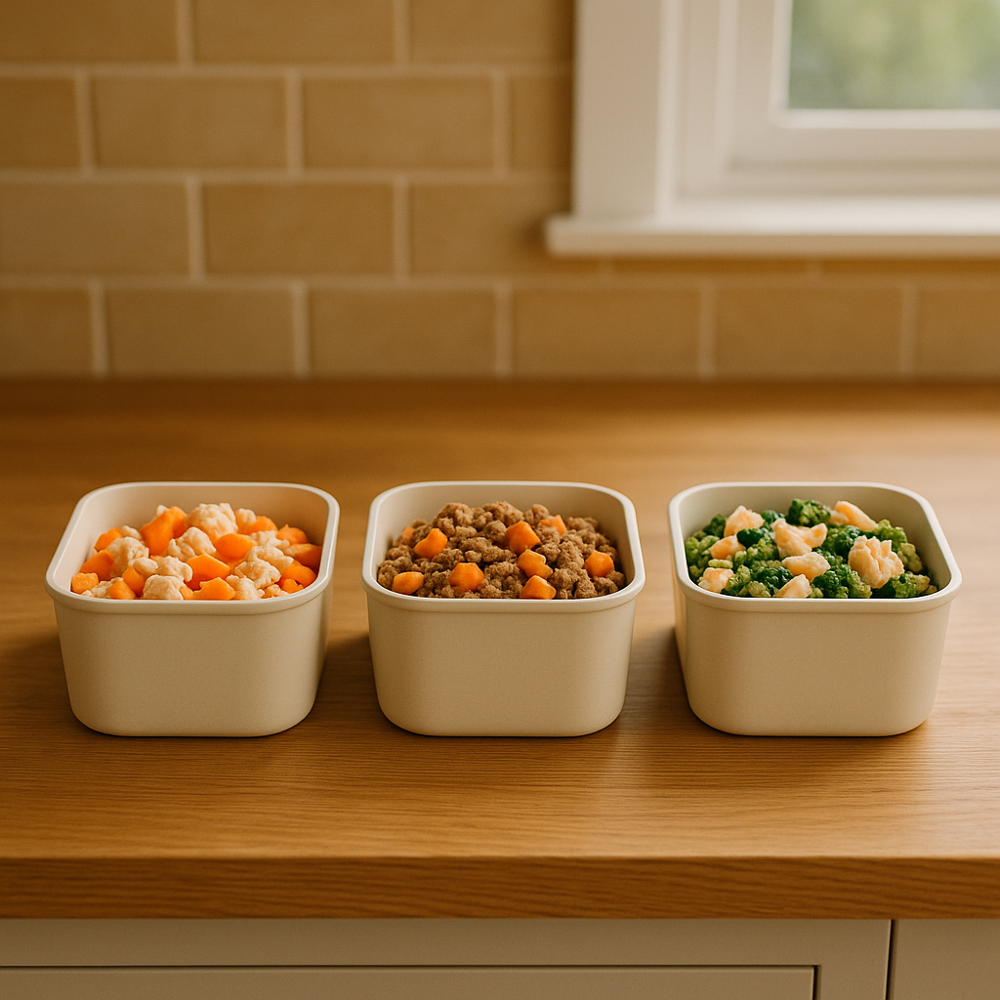

Best Fresh Dog Food Subscription UK: Butternut Box vs Tails.com vs Pure
Contents
Introduction
If you've ever heard dog owners rave about fresh food subscriptions, there's a reason — many dogs thrive on it. Fresh food subscriptions like Butternut Box, Tails.com, and Pure Pet Food have become increasingly popular in the UK, offering convenient weekly meal deliveries with real ingredients (meat, vegetables, no mystery fillers).
But are they worth the cost? How do they compare to supermarket kibble? And which one is actually best for your dog? This guide compares the three major UK providers, breaking down costs, ingredient quality, delivery, and customer experience so you can decide if fresh food is right for your dog.
Quick Answer
Butternut Box: Premium fresh food, from £3/day, highly nutritious. Tails.com: Most affordable, from £1/day, customised to your dog. Pure Pet Food: From £1.50/day, locally sourced. All are significantly better than budget kibble for most dogs' digestive and coat health.
Why Consider Fresh Food?
Most UK dogs eat kibble — shelf-stable, affordable, convenient. Fresh food is different:
- Real ingredients: Meat, vegetables, minimal processing. No synthetic preservatives, artificial colours, or fillers
- Digestibility: Fresh food is typically 80-90% digestible vs 70% for premium kibble, 55-60% for budget kibble. Better digestion = fewer calories needed, smaller stools, less bloating
- Coat & skin health: Higher quality proteins and omega fatty acids often improve coat shine and reduce itching
- Energy & appetite: Dogs often eat less (true satiety) and maintain energy better
- Cost-benefit: Sounds expensive (£2-4/day) until you realise it's often similar to quality kibble (£1-2/day) when accounting for portion size and veterinary costs

Butternut Box
Overview
Premium fresh food delivered weekly. Personalised recipes based on your dog's age, weight, activity level, and health conditions.
Pricing
- Small dog (5kg): From £3.00/day (roughly £21/week)
- Medium dog (15kg): From £2.50/day (roughly £35/week)
- Large dog (30kg): From £2.00/day (roughly £56/week)
First box discount: Usually 50% off first order.
What You Get
- 100% fresh, gently cooked meals (not raw, not kibble)
- Recipes customised to your dog's needs
- Weekly delivery (adjust frequency as needed)
- Comes in portion packs (no measuring required)
- Refriderated delivery
Ingredients Example
Typical recipe: Beef, sweet potato, broccoli, carrot, herbs — that's it. No fillers, by-products, or synthetic vitamins (they claim complete nutrition but some owners supplement).
Pros
- Premium quality ingredients
- Customised recipes
- Convenient portion packs
- Responsive customer service
Cons
- Most expensive option
- Requires regular refrigerator space
- Some dogs need time to adjust (digestive change)
Tails.com
Overview
Personalised fresh or lightly cooked meals. Very customisable — you answer detailed questions about your dog, and they create a unique recipe.
Pricing
- Small dog (5kg): From £1.00/day (roughly £14/week)
- Medium dog (15kg): From £0.85/day (roughly £24/week)
- Large dog (30kg): From £0.70/day (roughly £35/week)
First order often 30-50% discount.
What You Get
- Tailored meals based on detailed questionnaire (age, weight, activity, allergies, preferences)
- Weekly or twice-weekly delivery
- Portion packs ready to serve
- Flexible plan changes (pause, resume, adjust quantities)
Pros
- Most affordable fresh food option
- Highly personalised
- Easy to adjust or pause subscription
- Good customer reviews
Cons
- Quality slightly less premium than Butternut Box
- Some owners report recipes can be bland
Pure Pet Food
Overview
Locally-sourced, gently cooked meal packs. Focus on ethical sourcing and sustainability.
Pricing
- From £1.50/day depending on dog size and recipe selection
- First box discounts available
What You Get
- UK-sourced meat where possible
- Multiple recipe choices (different proteins, vegetables)
- Weekly delivery
- Portion packs
Pros
- Good balance of quality and price
- Ethical sourcing appeals to conscious owners
- Recipe variety
Cons
- Less customisation than Tails.com
- Smaller company (less brand recognition)

Quick Comparison Table
| Provider | Price/Day (Medium Dog) | Customisation | Quality |
|---|---|---|---|
| Butternut Box | £2.50 | High | Premium |
| Tails.com | £0.85 | Very High | Good |
| Pure Pet Food | £1.50 | Medium | Good |
Tips for Fresh Food Success
- Transition gradually: Switch over 7-10 days, mixing fresh with old food to avoid digestive upset
- Start with smaller portions: Fresh food is more nutritious; your dog may need 20-30% less
- Monitor stools: Good digestion = smaller, less smelly stools
- Combine with kibble if budget tight: 50% fresh, 50% kibble is still better than kibble alone
- Keep defrosted meals in fridge: Use within 2-3 days of thawing
Key Takeaway
Fresh dog food subscriptions cost £0.85-3.00/day depending on provider and dog size. Tails.com offers best value (from £1/day) with high customisation. Butternut Box is premium (£2.50/day) for discerning owners. Pure Pet Food is a good middle ground (£1.50/day). Most dogs thrive on fresh food with improved digestion, coat health, and satiety. Try a month subscription (with first-order discounts) — if your dog's health improves and digestion settles, the cost is justified. Many vets note that fresh-fed dogs have fewer health issues, potentially saving money in the long run.